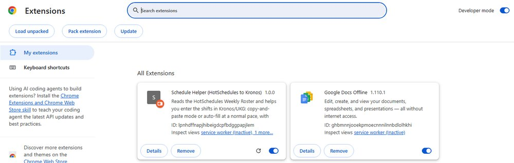
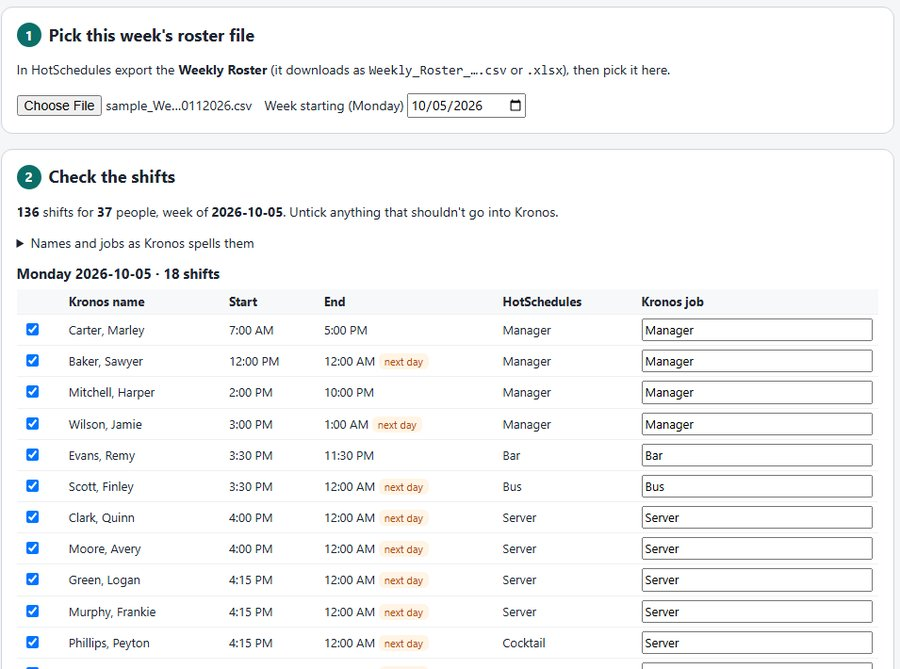
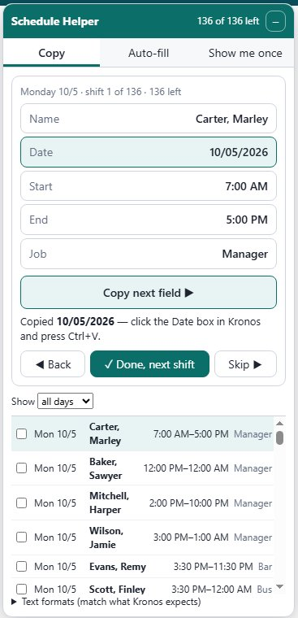
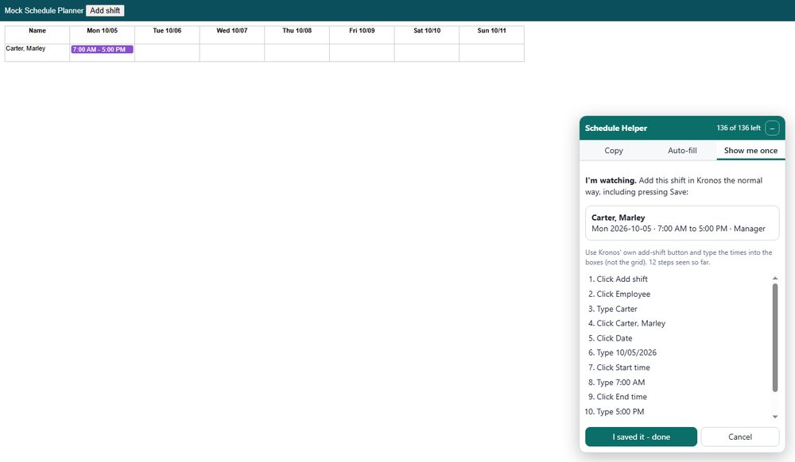
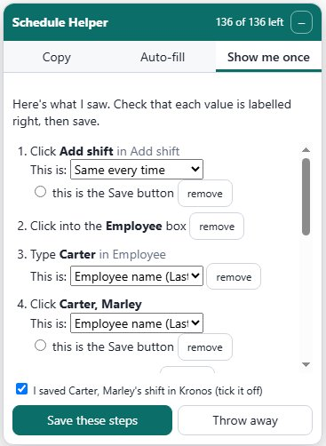
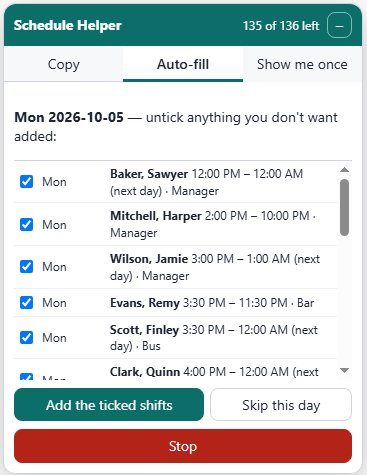
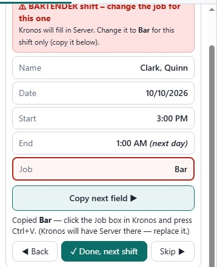
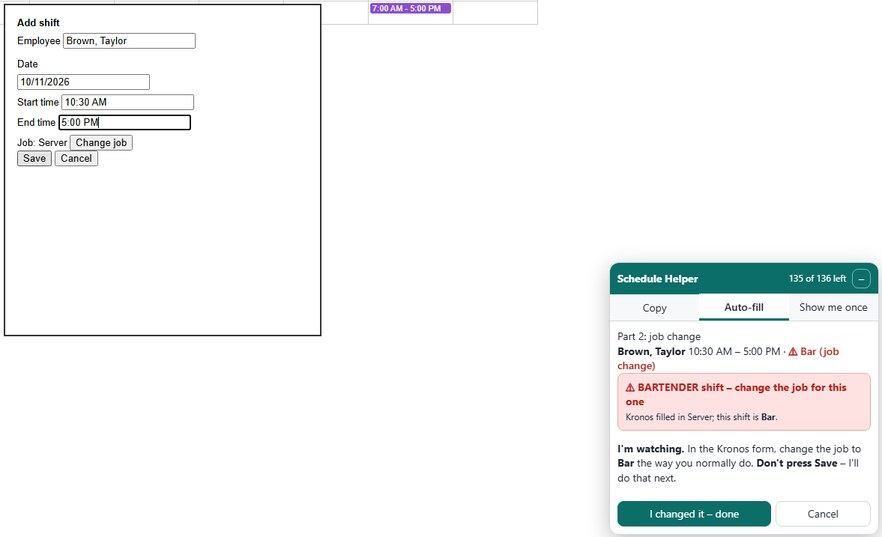

Before you start
- It's an add-on for Google Chrome on a computer. It also works in Microsoft Edge. It doesn't work on a phone.
- It never sees or saves your password, and it never signs in for you. You sign in to Kronos yourself, as usual.
- The schedule stays on your computer. Nothing is sent anywhere.
- Nothing is saved in Kronos until you say so.
A. Set it up (one time only)
- Download
schedule-helper.zipfrom the link Joseph sent you. - Right-click the zip and choose Extract All. Put the folder somewhere it can stay, for example
Documents\ScheduleHelper. Chrome uses this folder every time, so don't delete it. - In Chrome, click the address bar, type
chrome://extensionsand press Enter. (In Edge, typeedge://extensions.) - Turn on Developer mode using the switch in the top right corner. In Edge the switch is on the left.
- Click Load unpacked and pick the extension folder inside the folder you extracted.
- Schedule Helper now shows in the list:

- Pin it so it's easy to find. Click the puzzle-piece icon at the top right of Chrome, then click the pin next to Schedule Helper. Its button (a grey "S") now stays in the toolbar.
Chrome sometimes pops up a message about "developer mode extensions". Just close it, the helper keeps working. If you ever move the folder, do steps 3 to 5 again.
B. Every week: load the schedule
- Make and Post the schedule in HotSchedules like you always do.
- Download the Weekly Roster from HotSchedules. It's the same file you sent Joseph, named something like
Weekly_Roster_10052026_10112026. It can be a .csv or an Excel file; both work. - Click the Schedule Helper button in Chrome's toolbar. A page opens.
- Click Choose File and pick the Weekly Roster you just downloaded.
- Check the list:
- Week starting should be that week's Monday.
- Each day lists its shifts. "next day" means the shift ends after midnight. "double" means that person works twice that day.
- Names are written the Kronos way, "Last, First". If a name is wrong (two last names, a nickname), open Names and jobs as Kronos spells them and fix it there. The helper remembers your fixes for next week.
- Shifts marked job change are shifts where someone works a different job than usual (for example a server on Bar). See section E.
- Untick any shift that shouldn't go into Kronos.

- Click Use this schedule.
- Click Open Kronos, sign in like normal and go to the Schedule Planner. The Schedule Helper box appears in the bottom right corner. To move it, drag its green top bar. To make it smaller, click –.
C. Copy mode (simplest: you do every click)

- Open the Copy tab. It shows one shift at a time.
- In Kronos, open the add-shift form the way you normally do.
- Click Copy next field, click the matching box in Kronos, and press Ctrl+V to paste. Do the same for Name, Date, Start, End and Job. You can also click any single value to copy just that one.
- If the Name box in Kronos is a search box, paste the name and then click the person in the list that appears.
- Save the shift in Kronos, then click ✓ Done, next shift.
- Your ticks are saved. If you close Chrome, you'll be back where you stopped next time. The list at the bottom shows every shift and lets you jump to any of them.
If Kronos wants times or dates written differently (for example 17:00 instead of 5:00 PM), change them under Text formats at the bottom of the Copy tab.
D. Auto-fill (the helper types for you, after you OK it)
First, show it once. The helper has to watch you add one shift before it knows Kronos' add-shift form.
- Open the Show me once tab, choose a shift, and click Start watching.
- Add that shift in Kronos the normal way, using Kronos' own add shift button. Type the name, date and times into the boxes; don't click on the schedule grid. Then press Save in Kronos.

- Click I saved it - done. You'll see a list of what you did. Check that every value has the right label (Employee name, Shift date, Start time, End time, Job) and that the Save button is ticked. Then click Save these steps.

Then let it fill the week:
- Open the Auto-fill tab and click Start.
- It shows one day at a time. Shifts that already seem to be in Kronos are marked ⚠ already there? and unticked. Untick anything else you don't want, then click Add the ticked shifts.

- It enters the shifts one at a time at about the speed a person types. Leave the mouse and keyboard alone while it works. The red Stop button stops it whenever you want.
- If you picked "asks me before every shift" on the load page, it stops before each Save so you can check the form first.
- If it can't find something, it stops and asks you. You can do that step yourself and click I did it, click Try again, or click Skip this shift.
- When it's done, look over the week in Kronos before you finish.
E. Job-change shifts (a server working Bar)
When you add a shift, Kronos fills in the person's usual job. So if a server has a bartending shift, the job has to be changed to Bar for that one shift. The helper works out everyone's usual job (the job they work most that week) and marks every shift with a different job.
- Copy mode: those shifts show a red box, for example ⚠ BARTENDER shift – change the job for this one, and the Job button is outlined in red. Click it to copy the job, then change the job in Kronos for that shift.

- Auto-fill: show it once how you change the job (it's part 2 of the Show me once tab):
- Under Part 2: job-change shifts, pick a shift and click Show me on this shift.
- The helper fills in that shift and waits before Save. Change the job in the Kronos form the way you normally do. Don't press Save.

- Click I changed it – done. Check that the step where you picked the job says Job, then click Remember these steps. It asks before saving that shift.
- Wrong usual job? If Kronos has someone under a different main job than the helper guessed, open Names and jobs as Kronos spells them on the load page and pick their Usual job in Kronos. It's remembered for next week.
F. If something looks wrong
- The box doesn't show up on Kronos: refresh the page (F5). Make sure you're on the Schedule Planner, and that Schedule Helper is switched on at
chrome://extensions. - A shift is marked "job change" but shouldn't be (or the other way round): set that person's Usual job in Kronos on the load page, click Use this schedule again, and refresh Kronos.
- A name or job is wrong: fix it on the load page (step B4), click Use this schedule again, and refresh Kronos.
- Shifts are on the wrong days: check that Week starting is the Monday of that week.
- Auto-fill typed into the wrong box, or Kronos changed its form: click Stop and delete the wrong shift in Kronos yourself. Then, on the load page, click Forget "Show me once" and show it again. You can always use Copy mode instead.
- Late shifts: a shift ending at 12:00 AM or 1:00 AM ends the next day. Check that the first one looks right in Kronos.
- "Already there?" is only a guess from what's on the screen. You decide.
- To start the week over: on the load page, click Untick every shift.
- Still stuck? Take a screenshot and send it to Joseph.